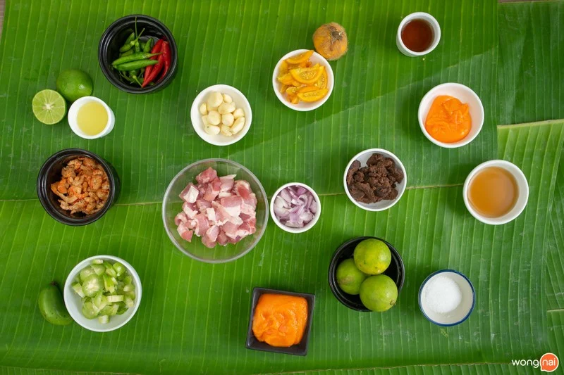
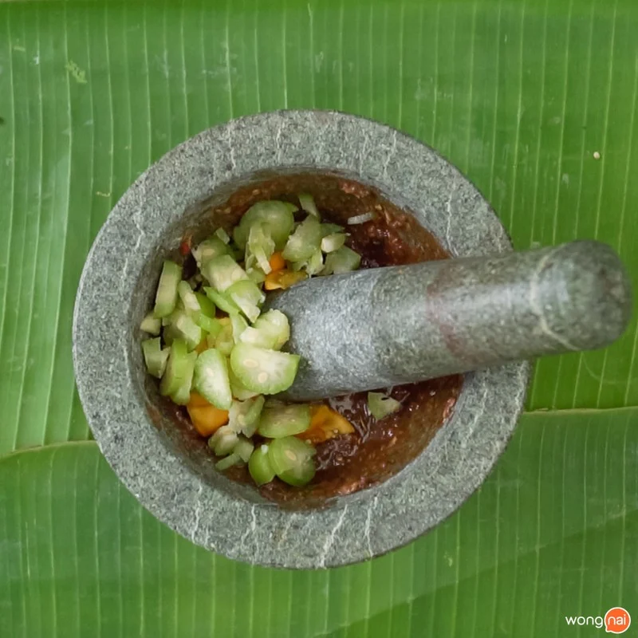
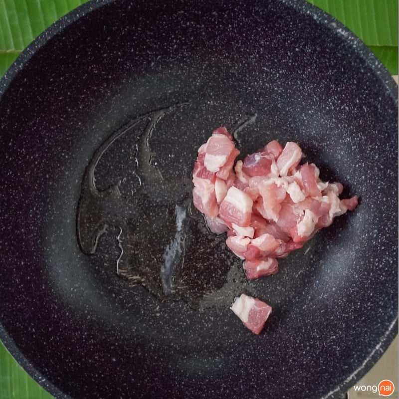
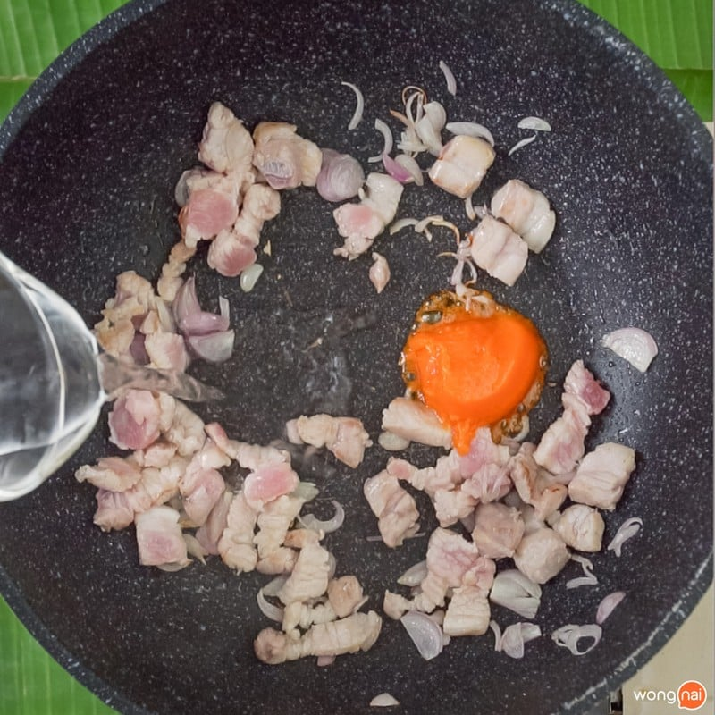
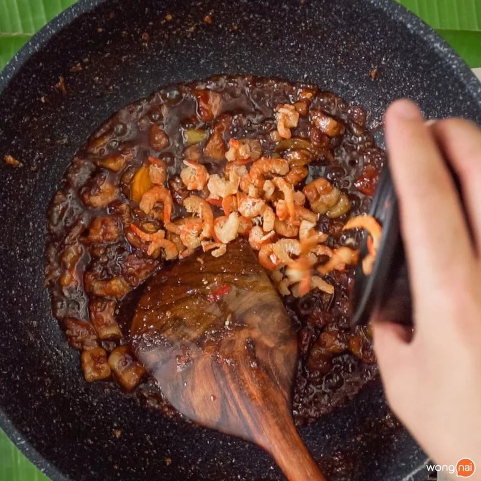
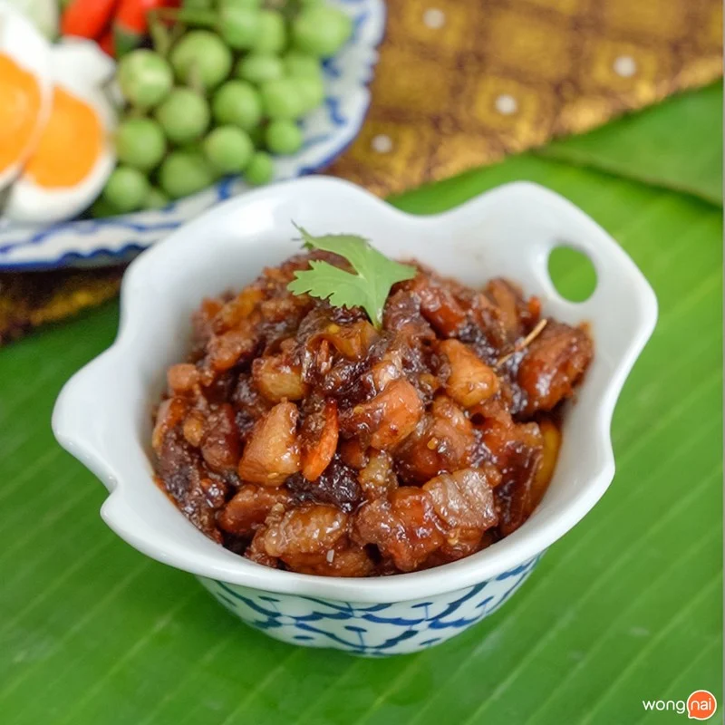

วันนี้แบมจะพาเพื่อน ๆ มาทำเมนูน้ำพริกชาววังอย่าง "น้ำพริกลงเรือ" ที่มีตำนานว่าเจ้าจอมท่านหนึ่งมีคนเรียกให้รีบลงเรือจึงรีบเปิดดูกับข้าวแล้วเจอ ปลาฟู หมูหวาน และน้ำพริกที่ตำไว้ เลยเอาลงเรือมาไว้สำหรับกินตอนท้องหิว ถ้าเพื่อน ๆ พร้อมแล้วเราสวมผ้ากันเปื้อนและเข้าครัวกันดีกว่า
วัตถุดิบ
- กะปิ 2 ช้อนโต๊ะ
- กระเทียมกลีบเล็กปอกเปลือก 15 กลีบ
- พริกขี้หนู 20 เม็ด
- มะอึกหั่นเส้น 4 ช้อนโต๊ะ
- มะดันสับละเอียด 3 ช้อนโต๊ะ
- กุ้งแห้ง 2 ช้อนโต๊ะ
- กระเทียม 15 เม็ด
- น้ำมะนาว 2 ช้อนโต๊ะ
- น้ำตาลปี๊บสำหรับโขลก 2 ช้อนโต๊ะ
- น้ำปลา 1½ ช้อนโต๊ะ
- หมูสามชั้นหั่น 500 กรัม
- น้ำตาลปี๊บ ½ ถ้วย
- น้ำตาลทราย ¼ ถ้วย
- น้ำปลา 2½ ช้อนโต๊ะ
- หอมเล็กปอกเปลือกซอย 5 หัว
วิธีทำ
ขั้นตอนที่ 1: โขลกน้ำพริก
- โขลกกะปิย่าง กระเทียมและพริกขี้หนู ลงโขลกให้ละเอียด ให้ละเอียด
- ตามด้วยมะอึกซอย มะดันสับ โขลกให้ละเอียดแล้วพักไว้
โขลกกะปิย่าง พริก และ กระเทียม ให้ละเอียด

ใส่มะอึก มะดึก ลงโขลก
ขั้นตอนที่ 2: ผัดหมูหวาน
- ตั้งกระทะพอร้อนใส่หมูสามชั้นพอตึงุลง ใส่น้ำตาลปี๊บให้ละลาย ใส่หอมแดงซอยพอ สุก ปรุงรสด้วยน้ำปลา

เอาหมูสามชั้นลงผัด

ปรุงรสด้วยน้ำตาล คนให้ละลาย
ขั้นตอนที่ 3: ผัดรวม และ เสิร์ฟ
- ใส่น้ำพริกที่ตำไว้ลลงในกระทะที่ผัดหมูหวาน
- ใส่กุ้งแห้ง ผัดให้พอแห้ง จัดเสิร์ฟ ตกแต่งด้วยไข่แดงเค็มให้สวยงาม

เทลงกุ้งแห้งลงกระทะ

จัดเสิร์ฟ พร้อมผักสด และ ไข่เค็ม
เรียบร้อยไปแล้วสำหรับเมนู “น้ำพริกลงเรือ” เสิร์ฟพร้อมผักสด ๆ หรือจะเป็นผักลวกที่เพื่อน ๆ ตามที่ชอบ พร้อมกับข้าวสวยร้อน ๆ ยิ่งเด็ดดวง ถ้าที่บ้านเพื่อน ๆ มีน้ำพริกกะปิเหลืออยู่ก็สามารถนำมาดัดแปลงโดยการเติมหมูหวาน และปลาฟู